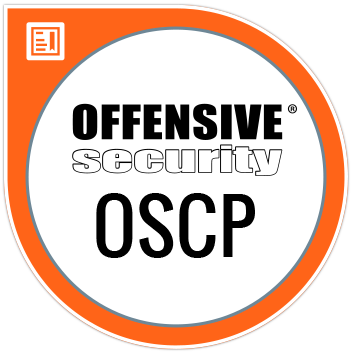
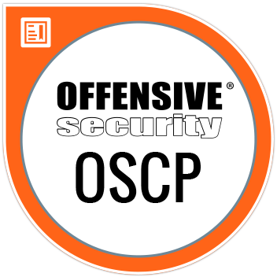

Menguak Dunia Hacker: Antara Etika dan Ancaman di Era Digital
by cyberblaze.id / 13 May, 2022
Ketika mendengar kata "hacker," banyak orang langsung membayangkan sosok misterius dengan hoodie hitam yang mengetik kode tanpa henti di layar komputer. Namun, apakah Anda tahu bahwa dunia hacker tidak selalu berisi ancaman dan aktivitas ilegal? Faktanya, hacker memainkan peran yang jauh lebih kompleks dalam era digital ini.
Apa itu Hacker?
Secara sederhana, hacker adalah individu yang memiliki keahlian mendalam dalam teknologi dan sistem komputer. Mereka mampu mengeksplorasi, memodifikasi, atau menemukan kelemahan dalam suatu sistem. Namun, istilah ini memiliki dua sisi: hacker etis (white hat) dan peretas jahat (black hat).
Hacker Etis: Penjaga Keamanan Dunia Maya
Hacker etis adalah para profesional yang menggunakan keahlian mereka untuk melindungi data dan sistem dari serangan. Mereka bekerja sama dengan organisasi untuk mengidentifikasi celah keamanan sebelum dimanfaatkan oleh pihak yang tidak bertanggung jawab. Salah satu sertifikasi paling terkenal di bidang ini adalah Certified Ethical Hacker (CEH), yang menjadi standar global dalam keamanan siber.
Contoh pekerjaan yang dilakukan oleh hacker etis meliputi:
- Melakukan tes penetrasi untuk mengidentifikasi kerentanan sistem.
- Mengembangkan sistem deteksi serangan (Intrusion Detection Systems).
- Melatih tim keamanan perusahaan untuk menghadapi ancaman dunia maya.
Peretas Jahat: Ancaman yang Mengintai
Di sisi lain, peretas jahat menggunakan keahlian mereka untuk keuntungan pribadi atau merusak sistem. Aktivitas mereka mencakup mencuri data sensitif, menyebarkan malware, hingga melakukan serangan ransomware yang dapat melumpuhkan organisasi besar.
Serangan oleh black hat hackers sering kali memiliki dampak yang sangat merugikan, seperti:
- Kebocoran data pelanggan yang memengaruhi reputasi perusahaan.
- Kehilangan finansial akibat serangan ransomware.
- Penyalahgunaan informasi pribadi untuk penipuan atau kejahatan lainnya.
Grey Hat: Garis Tipis di Antara Keduanya
Selain white hat dan black hat, ada juga grey hat hacker. Mereka berada di area abu-abu, kadang melakukan peretasan tanpa izin tetapi tidak untuk tujuan merusak. Misalnya, mereka mungkin mengungkap kelemahan dalam sistem tanpa meminta imbalan tetapi tetap melanggar aturan hukum.
Dampak Hacker pada Dunia Digital
Baik white hat maupun black hat, keduanya memiliki pengaruh besar terhadap lanskap keamanan dunia maya. Hacker etis membantu organisasi tetap selangkah lebih maju dari ancaman, sementara black hat hackers mendorong inovasi dalam teknologi keamanan.
Pentingnya Kesadaran Keamanan Siber
Dengan meningkatnya jumlah serangan siber, kesadaran akan pentingnya keamanan digital menjadi kebutuhan mendesak. Beberapa langkah yang dapat dilakukan untuk melindungi diri adalah:
- Menggunakan kata sandi yang kuat dan unik.
- Memperbarui perangkat lunak secara berkala.
- Berhati-hati saat mengklik tautan atau membuka lampiran dari email yang mencurigakan.
- Menggunakan perangkat lunak keamanan seperti antivirus dan firewall.
Kesimpulan
Dunia hacker tidak sesederhana hitam dan putih. Ada sisi terang yang membantu menjaga dunia digital tetap aman, tetapi ada juga sisi gelap yang selalu mencari celah untuk dimanfaatkan. Di era digital ini, penting bagi kita semua untuk memahami peran hacker, baik yang etis maupun yang jahat, agar dapat menghadapi tantangan dunia maya dengan lebih baik.
Sebagai bagian dari komunitas keamanan siber, Cyberblaze.id terus berkomitmen untuk meningkatkan kesadaran dan memberikan solusi terbaik dalam menjaga keamanan dunia maya.


 
